Mario Screensavers

Super Mario Collection Screen Saver
ALLCAST
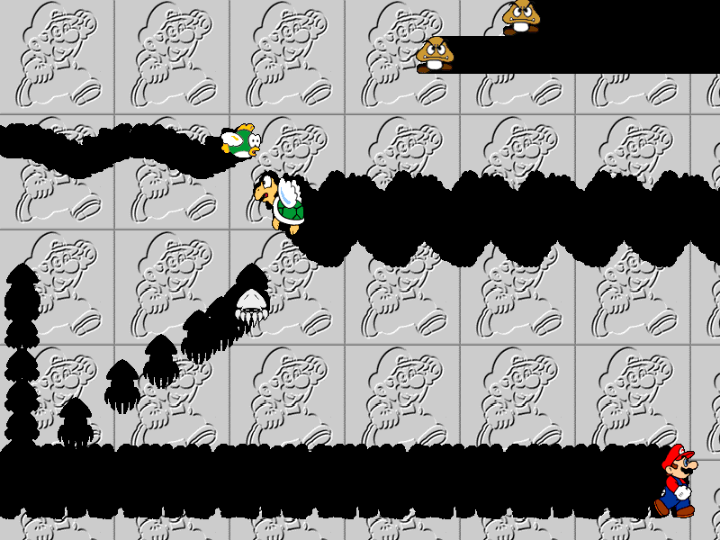
Note: This is a 16-bit program and requires special programs to run on 64-bit Windows, such as otvdm.
Note 2: This screensaver will not properly run on versions of Windows beyond Windows 2000.
DOWNLOAD
 .scr file (994 KB)
.scr file (994 KB)
COIN
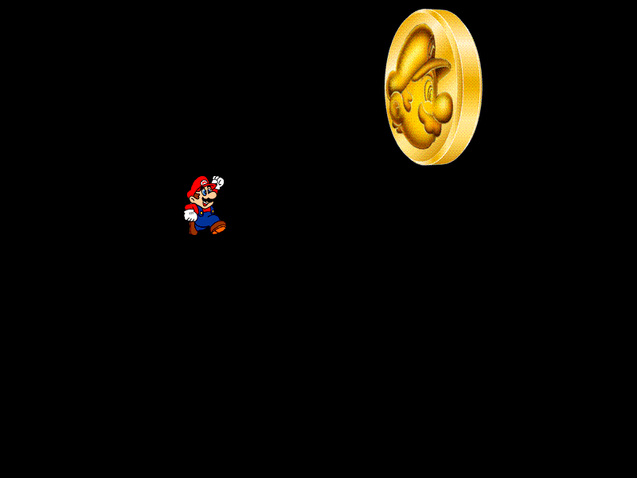
Note: This is a 16-bit program and requires special programs to run on 64-bit Windows, such as otvdm.
Note 2: This screensaver will not properly run on versions of Windows beyond Windows 2000.
DOWNLOAD
.scr file (2.38 MB)
HANABI
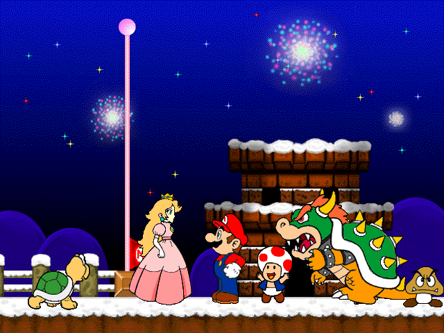
Note: This is a 16-bit program and requires special programs to run on 64-bit Windows, such as otvdm.
Note 2: This screensaver will not properly run on versions of Windows beyond Windows 2000.
DOWNLOAD
.scr file (3.07 MB)
KUPPA
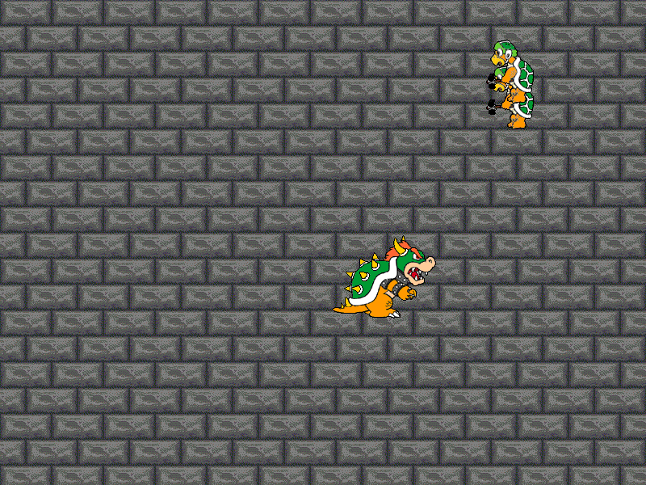
Note: This is a 16-bit program and requires special programs to run on 64-bit Windows, such as otvdm.
Note 2: This screensaver will not properly run on versions of Windows beyond Windows 2000.
DOWNLOAD
.scr file (2.17 MB)
MANDL
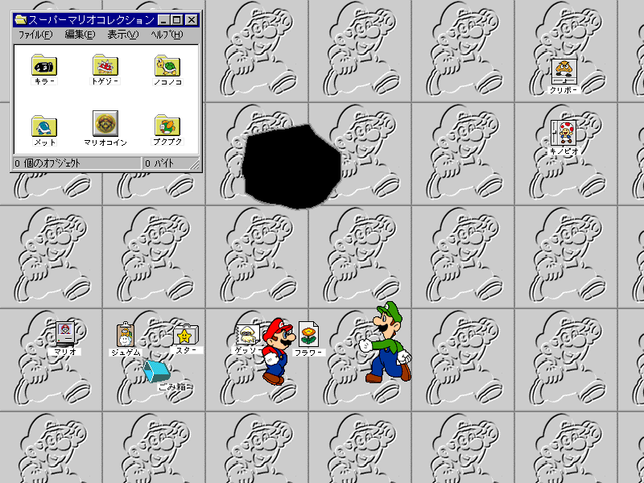
Note: This is a 16-bit program and requires special programs to run on 64-bit Windows, such as otvdm.
Note 2: This screensaver will not properly run on versions of Windows beyond Windows 2000.
DOWNLOAD
.scr file (2.85 MB)
SEA
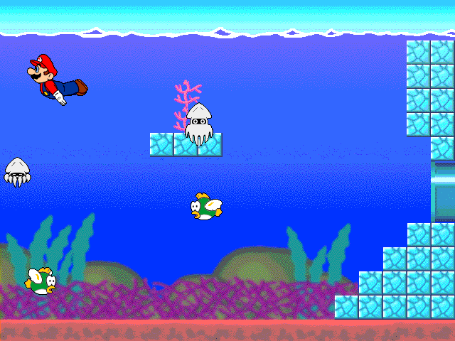
Note: This is a 16-bit program and requires special programs to run on 64-bit Windows, such as otvdm.
Note 2: This screensaver will not properly run on versions of Windows beyond Windows 2000.
DOWNLOAD
.scr file (1.44 MB)
Donkey Kong 64
Archived from an old version of Nintendo of Norway's website (nintendo.no).

DOWNLOAD
.exe file zipped (1.08 MB)
Mario Party 2
Archived from an old version of Nintendo of Norway's website (nintendo.no).
Originally from nintendo.de
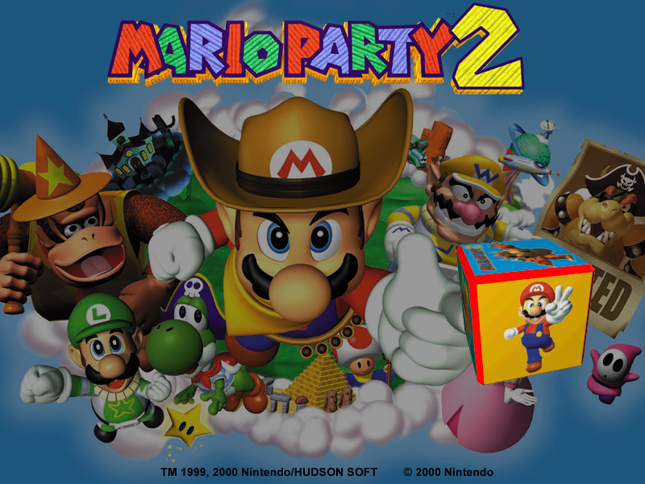
DOWNLOAD
.exe file zipped (1.71 MB)
Paper Mario

DOWNLOAD
.exe file zipped (1.36 MB)
Donkey Kong Country (Game Boy Color)
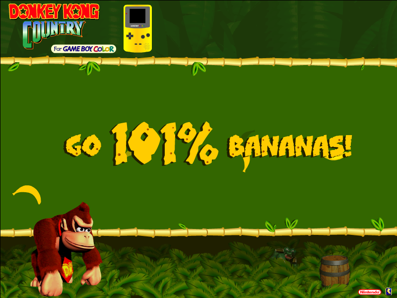
DOWNLOAD
.exe file zipped (Windows) (370 KB)
.sea file (Mac OS) (308 KB)
Super Mario Advance

Note: This is a 16-bit program and requires special programs to install on 64-bit Windows, such as otvdm.
DOWNLOAD
.exe file zipped (Windows) (1.11 MB)
.sit file (Mac OS 9) (1.05 MB)
Wario Land 4
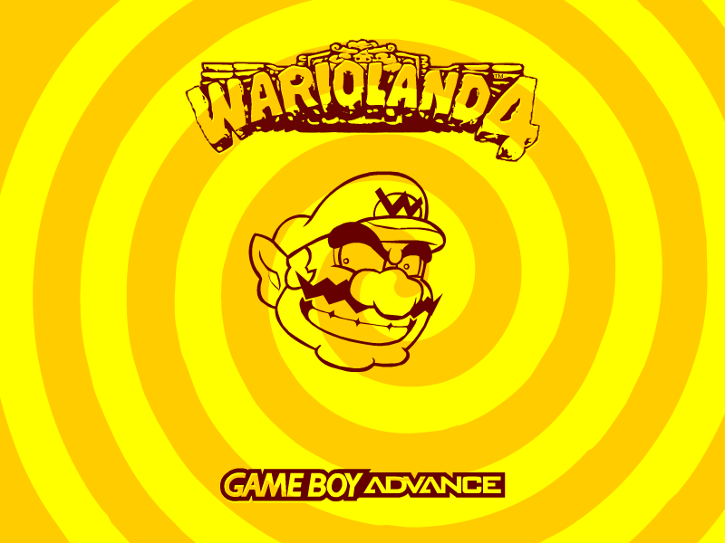
DOWNLOAD
.exe file zipped (288 KB)
Luigi's Mansion

Note: This is a 16-bit program and requires special programs to install on 64-bit Windows, such as otvdm.
DOWNLOAD
.exe file zipped (Windows) (1.27 MB)
.sit file (Mac OS 9) (1.25 MB)
Mario Party 4

DOWNLOAD
.exe file zipped (Windows) (726 KB)
.sit file (Mac OS 9) (1.12 MB)
.sit file (Mac OS X) (1.32 MB)
WarioWare, Inc.: Mega Party Game$!
 Screensaver.png)
DOWNLOAD
.exe file zipped (727 KB)
Mario Kart: Double Dash!!

DOWNLOAD
.exe file zipped (Windows) (995 KB)
.sit file (Mac OS 9) (1.8 MB)
.sit file (Mac OS X) (1.68 MB)
Mario Kart: Double Dash!! (2)

DOWNLOAD
.exe file zipped (1.47 MB)
Mario Party 5

DOWNLOAD
.exe file zipped (1.15 MB)
Mario & Luigi: Superstar Saga

DOWNLOAD
.exe file zipped (1.37 MB)
Donkey Konga
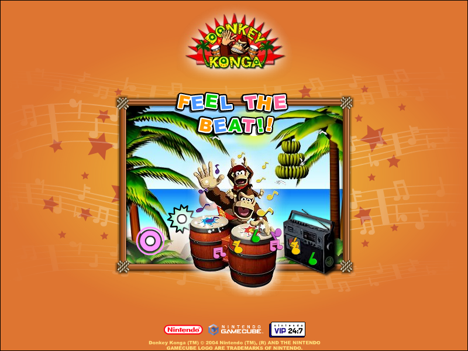
DOWNLOAD
.exe file zipped (1.24 MB)
Donkey Konga (Dance)

DOWNLOAD
.exe file zipped (4.01 MB)
Mario Golf: Advance Tour
 Screensaver.png)
DOWNLOAD
.exe file zipped (925 KB)
Mario Golf: Advance Tour (2)
 Screensaver.png)
DOWNLOAD
.exe file zipped (1.47 MB)
Mario vs. Donkey Kong

DOWNLOAD
.exe file zipped (Windows) (1.02 MB)
.sit file (Mac OS 9/X) (2.09 MB)
Donkey Konga 2 (Donkey Kong)
 Screensaver.png)
DOWNLOAD
.exe file zipped (1.50 MB)
Donkey Konga 2 (TV)
 Screensaver.png)
DOWNLOAD
.exe file zipped (1.40 MB)
Paper Mario: The Thousand-Year Door

DOWNLOAD
.exe file zipped (1.31 MB)
Mario Power Tennis (Characters)
 Screensaver.png)
DOWNLOAD
.exe file zipped (1.52 MB)
Mario Power Tennis (Game)
 Screensaver.png)
DOWNLOAD
.exe file zipped (1.37 MB)
Mario Party 6 (Clock)
 Screensaver.png)
DOWNLOAD
.exe file zipped (1.81 MB)
Mario Party 6
 Screensaver.png)
DOWNLOAD
.exe file zipped (1.63 MB)
Super Mario 64 DS

DOWNLOAD
.exe file zipped (1.29 MB)
Yoshi Topsy-Turvy

DOWNLOAD
.exe file zipped (1.39 MB)
Donkey Kong Jungle Beat

DOWNLOAD
.exe file zipped (3.97 MB)
Yoshi Touch & Go
This also functions as a small mini-game.
 Screensaver.png)
DOWNLOAD
.exe file zipped (411 KB)
Yoshi Touch & Go (2)
This also functions as a small mini-game.
 Screensaver.png)
DOWNLOAD
.exe file zipped (515 KB)
Super Princess Peach

DOWNLOAD
.exe file zipped (1.20 MB)
Mario Kart DS
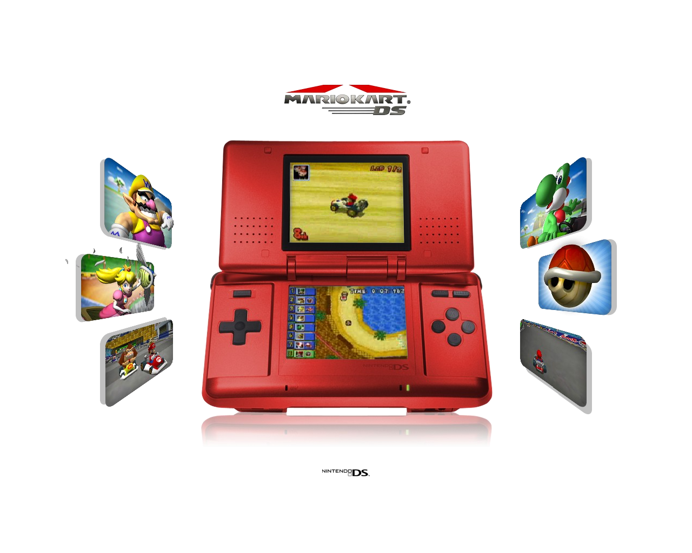
DOWNLOAD
.exe file zipped (Windows) (5.52 MB)
.sit file (Mac OS X) (5.44 MB)
New Super Mario Bros.

DOWNLOAD
.exe file zipped (9.30 MB)
Super Mario Galaxy 2
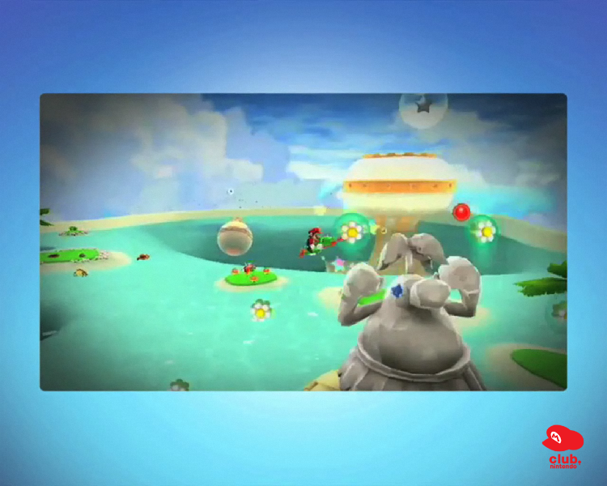
DOWNLOAD
.exe file zipped (81.2 MB)